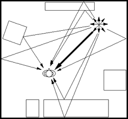

4.1. Mecanismos de audición espacial 1
A continuación, listamos una serie de parámetros que nuestro oído utiliza para localizar la fuente del sonido. Muchos de ellos dependen de cada individuo, así como de la forma de su cabeza y de sus distintos miembros. Veremos más adelante cómo algunos definen la situación vertical, otros la izquierda-derecha, y otros dependen de la frecuencia.
Según Begault, hay ocho características por las que localizamos el sonido. Estas son: diferencia de tiempos interaurales (ITD), el movimiento de la cabeza y la fuente, la respuesta del pabellón auditivo (características de ITD e IID, HRTF), características de la distancia (intensidad, volumen, influencia de la familiaridad, características espectrales y binaurales), y reverberación. A continuación, describimos los aspectos más importantes:
-
El tiempo de llegada del frente de onda a los oídos, o mejor dicho, la diferencia de los tiempos de llegada entre los dos oídos, es uno de los mecanismos que usa nuestro sistema auditivo para localizar una fuente de sonido. Este tiempo se conoce como ITD (Interaural Time Difference). Este efecto es útil hasta una frecuencia en la que la longitud de onda del sonido se aproxima al doble de la distancia entre los dos oídos, a partir de la cual no se diferencia un sonido de otro. Este tiempo de llegada del sonido nos permite localizarlo en un ángulo horizontal de 90º (derecha) a 270º (izquierda). Parece ser efectivo a frecuencias por debajo de los 900 Hz.
-
El sonido de una fuente que venga de la izquierda, por ejemplo, llegará primero al oído izquierdo, pero tendrá que viajar más hasta el otro lado. En realidad, el sonido se difracta alrededor de la cabeza para llegar al oído derecho y, por lo tanto, tendrá que viajar más. Este tiempo se llama ILD (Interaural Level Difference), que abarca tanto el efecto pantalla de la cabeza como la distancia extra que recorre.
-
Cuando los ITD e ILD son prácticamente los mismos, entra en juego otro factor: HRTF (Head Related Transfer Functions). Esto ocurre cuando el sonido está localizado en el plano medio, pareciendo que la localización se lleva a cabo con la convolución de la señal y la forma de nuestro torso superior, cabeza, cuello y orejas. Esta información es útil para determinar tanto la elevación como la localización trasera o delantera.
-
Distancia:
- El volumen: Aunque parezca sencillo, el volumen de un sonido es un parámetro poco fiable para la localización del sonido. La energía acústica cae inversamente al cuadrado de la distancia, pero cuando manejamos solo amplitudes, no es lo mismo que la impresión de volumen. Esto se debe a que el volumen no está linealmente relacionado con la amplitud y es muy dependiente de nuestro conocimiento adquirido del comportamiento de las fuentes sonoras que lo crean.
- Proporcionalidad entre reverberación y sonido seco: En habitaciones cerradas, la energía de una densa reverberación será más o menos constante, mientras que la energía de un sonido directo (seco) caerá con la distancia.
- Absorción de las altas frecuencias: Tiene que ver con los gases del aire. Este efecto es similar a un filtro paso bajo y se considera relevante a distancias mayores de 50 metros.
- Tiempo de reverberación: El mismo nombre lo indica.
- Balance espectral: Las habitaciones actúan como filtros, modificando el espectro de las señales acústicas.
- Difusión: Tiene que ver con la absorción de los materiales; normalmente, las frecuencias altas caen más rápidamente.
-
Nuestra habilidad para mover la cabeza nos ayuda a integrar la información visual y auditiva. Además, nos sirve para minimizar el ITD, ILD y la diferencia entre las HRTF de los dos oídos.
-
El efecto Doppler es importante en la localización. Observamos cómo el tono de una fuente en movimiento aumenta o disminuye según se aleja o se acerca.
-
The Precedence Effect o el Efecto Haas: Este efecto explica cómo somos capaces de localizar una fuente aunque seamos confundidos por las reflexiones y los ecos. La ley del primer frente de ondas (“the law of the first wavefront”).

-
La forma en que la fuente emite el sonido: Una fuente que irradia energía de igual manera en todas las direcciones se considera omnidireccional. Esto es una idealización, ya que normalmente no es así.
-
Spatial hearing mechanisms and sound reproduction. D.G. Malham, University of York, England 1998. http://web.archive.org/web/20180603185342/https://www.york.ac.uk/inst/mustech/3d_audio/ambis2.htm ↩︎